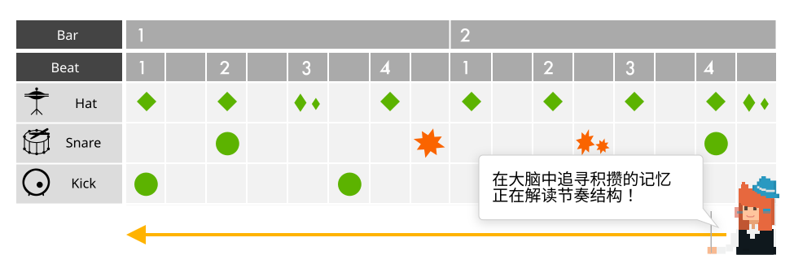

至此，我们已经探讨了几种节奏重音结构：在结构上强调权重较低的“弱拍”的后拍（Backbeat），创造出了不同于古典乐的独特律动；而强调对应头部与手臂抬起动作的“反拍”的 Upbeat 节奏，则能营造出轻盈灵动与向上升腾的漂浮感。
强调弱拍的后拍（Backbeat）
强调反拍的 Upbeat
在这一篇中，我们将进一步深入研究这种将重音放置在离拍（Off-beat）上的各种手法。
 1. 底鼓的离拍表达
1. 底鼓的离拍表达
首先让我们思考底鼓（Kick）的发音点。 像这样底鼓平稳恒定地落在第 1、3 拍上的状态，精准而清晰地传达出节拍强拍的位置，因而是最稳定的骨架结构。如果从这里开始以 1/8 网格为单位错开发音点，使节奏模式变得复杂化……
底鼓偏移 1/8 网格（八分反拍）
听起来是这种感觉。将发音点移到离拍（Off-beat）上，结果便催生出了“向前冲（抢拍感）”或“蓄力延宕（拖拍感）”的效果，让节奏展现出独特的个性。如果我们进一步加入 1/16 网格的离拍（= 十六分反拍）发音点……
底鼓结合 1/8 与 1/16 网格偏移
节奏立刻变得扣人心弦、充满张力！✨ 底鼓与军鼓发音点贴近所带来的跃动感，以及重音出现在出人意料之处所带来的惊奇感，都跃然耳畔。
实际案例
在流行音乐中，重音落在八分音符反拍上早已是家常便饭，甚至无需特意强调。但一旦细化到十六分音符反拍，根据图案设计方式的不同，甚至能够升华为令人印象深刻、足以代表整首歌曲灵魂标识的标志性节奏。
摇滚鼓点案例
齐柏林飞艇（Led Zeppelin）的《Immigrant Song》（移民之歌）就是一首十六分音符切分令人难以忘怀的名作。在军鼓敲击之后，紧随其后在十六分反拍上踩下底鼓，形成“哒·咚”的绝妙节奏，成为了这首传奇歌曲的象征符号。

在架子鼓节奏中，除非拥有极其复杂且独一无二的结构，否则通常不被认定为受版权保护的作品。然而在摇滚界，一旦打出这段“咚·嘟·嘟·哒·咚·哒”的鼓点，所有人都会立刻心领神会这是在致敬《Immigrant Song》，可见其名气之盛。仅仅一记离拍敲击，就能成为一首歌曲的标志性图腾——这正是节奏世界的深奥之处。
电子鼓点案例
在电子音乐的鼓点编写中同样如此，将重音落在十六分反拍上的节奏往往能确立整首作品的独特性。
这是代表环境浩室（Ambient House）风格的开山名曲——808 State 的《Pacific》。初听似乎是普通的“四落地（Four-on-the-floor）”直拍，但在第 4 拍处，却出人意料地插入了由十六分反拍构成的两击“咚·咚”离拍底鼓，形成了极其强烈的重音冲击。

在第 4 拍制造变化，不仅让音乐耐听不易生厌，同时也使歌曲的小节结构更加鲜明易辨。
2. 军鼓的离拍表达
如果说底鼓的错位挪移已经非常普遍随性，那么想要去挪移构成后拍（Backbeat）绝对骨干的第 2、4 拍军鼓，就显得相当具有挑战性了。
军鼓偏移 1/8 网格
军鼓结合 1/8 与 1/16 网格偏移
听起来相当繁复深奥吧。之前介绍过的雷鬼“One Drop（一滴节奏）”虽然省略了第 1 拍的底鼓，但其第 2、4 拍的军鼓本身依然恪守不渝。在后拍已经成为绝对主流的现代流行音乐中，可以说这第 2、4 拍的军鼓才是整个节拍无可撼动的中流砥柱，是最难以轻易挪动的发音点。 然而正因如此，敢于直接在这第 2、4 拍军鼓上运用切分音，便能够剧烈颠覆整首歌的节奏面貌。
Coldplay 的《42》就是军鼓切分运用得淋漓尽致的典范。第 2 记军鼓被挪移到了第 4 拍的反拍，第 3 记军鼓也移到了第 2 拍的反拍，并在此基础上敲出了双连击。

在人声进入后编排虽然有所简化，但循环模式中依然有敲击点偏离了原本的标准打点。仔细观察就会发现，它精准保留了后拍原本打点中的最初与最后击打，而将中间部分进行了自由游移。由此，乐曲既打破了常规，又保留了足以让听众不至于在拍子感知中彻底迷失的最低限度流行度。 将军鼓从 2、4 拍移开的切分手法，深受偏好复杂性的流派青睐：在原声真鼓中常见于融合爵士（Fusion）与后摇（Post-Rock）；在电子鼓中，则常见于 IDM、Jungle 以及 Drum and Bass（鼓打贝斯）等流派。
与恒定敲击在 2、4 拍相比，当敲击点脱离常规预期时便会诞生意外感，带来强烈的听觉刺激。这种让人一瞬间分不清拍子在哪里的错觉，有时正是用来烘托“迷幻沉浸感（Trip）”的强力武器。
3. 切分音（Syncopation）
综上所述，将实际重音放置在弱拍或拍子反拍等原本被认为不具备重音权重的位置上，从而使节奏听起来更加精巧、更具张力与惊险感的手法，被称为切分音（切分法 / Syncopation）。这是节奏理论中地位极其崇高的核心词汇！
切分音（Syncopation） : 在任意节奏网格中，将重音落在离拍（Off-beat，即原本被认为不具备节拍重音权重的位置）上的技法[16]。 : 作为参照的网格通常为 1/8 或 1/16，但从定义上讲并不局限于此[17]。
切分音在古典音乐甚至更古老的音乐时代就已被广泛使用，并且在当今时代依然每日都在被无限运用。
节奏的稳定感与张弛
前面歌单里那些将军鼓切分错位的乐曲，由于截取自乐曲中间片段，很可能有些会让你觉得节拍非常难以捉摸。 仔细深思便会发现，节拍的内部结构实际上是我们在聆听过程中于脑海中自行拼装出来的感官产物。当第 1 个音符敲响时，我们根本无法预知这首音乐究竟是几拍子。随着演奏推进、循环结构显现，我们回溯前文听过的节奏模式，才在脑中理清了四拍子、后拍等结构。我们在无意识中进行着这种奇妙的回溯性分析。


无论是在 1/4 网格、1/8 网格还是更细的微观网格下，切分音将发音点从充当“支柱”的网格线上移开，都会对这种节拍结构的认知带来动摇与波动。通俗地说，落在网格线上的正拍（On-beat）节奏在结构上是稳定的，而包含切分音的节奏则是不稳定的。在音乐理论中，这种不稳定状态被称为紧张 / 张力（Tension）。正如时间艺术中常说的“紧张与松弛（Tension and Release）”，切分音为音乐注入了鲜活的张力[18]。 当然，“紧张”绝非坏事，倒不如说如何巧妙驾驭张力正是节奏的无穷趣味所在。这与和弦理论中熟练运用带色彩的非协和音（Dissonance）是完全相通的道理。
The Winstons (1969), Amen Brother, 1:26-1:35（鼓独奏部分）
例如这段载入史册的节奏循环（Amen Break），最初以极其稳健的后拍展开，但在第 3 个循环的末尾，军鼓突然发生错位，瞬间紧紧抓住听众的耳朵：“哦……？！”就在节奏感知经历了一次扭曲晃动后，小节开头伴随吊镲与底鼓轰鸣，平和安稳的节拍再次归来。偏差带来的紧张，以及随后化解所释放的松弛——这正是西方音乐节奏构筑的根本法则[19]。 由此看来，节奏理论是不是也展现出了丝毫不逊色于和声学的严密体系感呢？
乐段之间的张弛对比
利用切分音的存在与否来调控张力与紧迫感，同样可以用来构筑乐曲不同段落之间的推进层次。
Nirvana 的《Smells Like Teen Spirit》前奏中，底鼓包含了几处切分音。虽然这本身并不算极度复杂，但关键在于——前奏结束进入主歌后那异乎寻常的极度简约。鼓点退化为最原始简单的“咚·咚·哒”，贝斯与吉他也持续演奏着不含任何十六分音符的平铺直叙乐句。而一旦进入副歌，音乐又再次回到了布满离拍的剧烈节奏中……主歌与副歌之间形成了无与伦比的鲜明动态反差。 这首歌曲自始至终只用了一套简单的四和弦进行无限循环。在这样的架构下，驱动整首作品情绪推进起伏的引擎其实只有两个：一个是吉他失真度（Distortion）的强弱，另一个就是切分音的张力烈度。在现代流行音乐中，不仅和弦，音色与节奏同样是驱动乐曲叙事展开的强大齿轮。
4. 鼓组以外乐器的切分音
上面我们主要观察了底鼓与军鼓的发音点，但切分音当然绝不仅限于打击乐器。 这是一段重音相对平稳直白的乐段。在后拍已成常态的今天，这可谓是一段缺乏辨识度的普通节奏。现在我们尝试让鼓组以外的所有乐器声部，在 1/8 网格上适度加入切分音： 听起来焕然一新！强调反拍（Upbeat）的发音点增多，整首音乐立刻洋溢出跳跃轻快的气息。在每种乐器的每一个发音点上，都面临着“要不要切分”的抉择。从这个角度考虑，编织节奏合奏的排列组合方式几乎是无穷无尽的。节奏世界确实深不可测。
主旋律的 1/8 网格切分
让我们先来看几个在主旋律中巧妙应用切分音的经典之作。
莫扎特第25号交响曲是古典音乐史上极为著名的切分音用例。开篇第一句标志性的“哒·哒——哒——哒——哒”，除了第一个起音落在拍头上，其余所有音符全部稳稳咬在反拍上。作为一部古典交响曲的开篇，这在当时具有极强的听觉冲击力。 紧随其后到来的乐句则反其道而行之，变成了极度强调强拍、沉稳有力的齐奏乐句，正拍与反拍的强烈反差堪称神来之笔。
时空流转两百年，披头士乐队（The Beatles）的《If I Needed Someone》前奏吉他响起，其节奏形态正是熟悉的“哒·哒——哒——哒——哒”——这与莫扎特的交响曲如出一辙！人类跨越两百年时光，依然被同一种律动深深俘获……这首歌的歌唱旋律中同样充斥着大量反拍切分，是学习切分旋律律动感的绝佳范本。
YOASOBI 的《群青》是一首副歌切分音运用极为突出的作品。无论是“ままに”（随心所欲）、“描く”（描绘）、还是“自分”（自己），整首副歌基本上以 3 音为一组的断句推进，而这些短句的起点与终点无一例外全落在反拍上！

可以看到，作为强拍的第 1、3 拍的发音点完全被镂空了！这是极具个性的编配手法。第 1 段副歌伴奏中的鼓组节奏沉稳缓慢，氛围平和，但旋律本身却以强化反拍的活泼跳跃姿态展开，这种内紧外松的鲜明反差赋予了歌曲无穷的魅力。
伴奏声部的 1/8 网格切分
伴奏声部的切分设计同样是构筑节奏合奏的核心考量。
鱼韵乐队（Sakanaction）的《Music》（ミュージック），其魅力全在于四落地稳健轰鸣的底鼓，与犹如填补缝隙般大量穿插在反拍上的合成器琶音之间所形成的奇妙交织。

旋律同样如此，如副歌中的“消えた”等处包含了大量切分，除了底鼓之外的所有乐器都在协力推高 Upbeat 的浮动感。 尤为重要的是，在四落地舞曲中，切分音意味着让声音的发音点与底鼓错开。发音点不重叠，就意味着各个声部之间不会发生频率掩蔽与互相挤压。在舞曲中，底鼓的下潜与冲击力是生命线；而作为流行歌曲，人声演唱又必须清晰通透。因此当两者都需要兼顾、谁也不愿退让时，将两者的发音点在时间上错开（切分）就是最强有力的解决之道。
1/16 网格的微观切分
上述曲目均以 1/8 网格的切分为主，而一旦将错位细化到 1/16 网格，旋律的紧凑感与冲击力便会更上一层楼。
放克风格（Funk）案例
Mark Ronson 与 Bruno Mars 的《Uptown Funk》是一首处处流淌着十六分音符切分的 Funk 宝典。前奏由稳定维持在第 2、4 拍后拍的击掌声、轻快利落的扫弦吉他，以及唱着“哒·哒——哒”的人声贝斯组成；而吉他与人声贝斯的乐句，都巧妙运用了将 1 拍划分为 3:1 的十六分反拍切分。

这种“嗒··哒”的 3:1 切分随后直接延续到了人声主歌的开篇，“This hit, that ice cold, Michelle Pfeiffer, that white gold”无一例外全都在反复运用这种切分模型。 最标志性的莫过于进入副歌前的蓄力爬升（Build-up）段落，不断高呼的“'Cause uptown funk gon' give it to you”以及后段的“Saturday night and we in the spot”，其乐句的末尾全都被刻意甩在十六分音符反拍上，形成了一种用切分将节奏一把挑飞起来的奇绝构图：

从单词的语调起伏来看，这里同样延续了前奏中建立的 3:1 细分逻辑。“give it to you”的“you”在十六分反拍上一击爆裂，随后的第 4 拍则彻底留白。切分音的着陆点被整整悬空了 1 拍，赋予了乐句一种犹如被抛入空中悬停一般的奇妙浮空感与紧张感。 像这样，把 1 拍四等分后的最后 1 格加以重音强调，且在其后方留出空白以衬托切分的节奏模式，可谓慢速舞曲中的“黄金律”法则之一，在各大全球热单中屡见不鲜：
这些歌曲的 BPM 显然都不算快，但骨子里却有一种共通的弹跳轻快感。探寻其根源，正是这个“拍头前一刹那的十六分反拍 ＋ 其后留白”的绝妙公式。不妨试着对照节拍网格，去挖掘这些歌曲旋律中隐藏的十六分切分宝藏吧。
EDM 风格案例
aespa 的《Supernova》副歌（0:42 处起）更是将敲击点几乎全部集中在十六分反拍上的极端罕见案例。

鼓组节奏中完全没有任何 1/16 网格的碎碎碎打，也没有反拍重音，是极其纯粹方正的四落地后拍基底。然而人声演唱与合成器却以密集的“嗒·嗒”十六分反拍强势切入，构成了极具张力的冲击感。节奏的稳定支柱与不稳定的游移声部之间，职责分工被设计得丝丝入扣。 歌曲中偶尔插入的标志性人声打点，同样契合了刚才提到的“黄金律”十六分切分：前三个字规矩地踩在八分音符网格上，最后一个字突然向后一错甩在反拍上打破预期。这种张弛节奏感让人百听不厌。
5. 抢拍 / 先现音（Anticipation）
在切分音的各种形态中，将节奏比原本应有的位置提前推出（即更早发音）以提升速度感的手法，是应用最为广泛的经典策略。 这是未经加工的原始状态，所有重音均四平八稳地落在正拍上，略显呆板平淡。现在我们将其中几个发音点提前抢出： 效果立竿见影！节奏接连向前倾倒，字面意义上呈现出一种“向前冲（前のめり）”的迫切感，仿佛演奏者们按捺不住内心的冲动，等不及常规拍点的到来便抢先“抢跑起飞”。这种将音符提前抢拍发声的切分形态，在理论上被称为先现音 / 抢拍（Anticipation）。
先现音 / 抢拍（Anticipation） : 音符早于其原本应有的发音点（或理论归属位置）提前奏响的节奏技法[20]。 : 在乐手行话中，也常俗称为“抢拍”或“咬拍（食う）”。
先现音在摇滚乐与 EDM 中扮演着举足轻重的角色，是表达呼之欲出的爆发力、冲动热血感的绝佳利器。
ONE OK ROCK 的《Nobody's Home》就是这种“抢拍冲锋”感极强的代表作。无论是在 0:23 处跨小节切入轰鸣失真音墙的瞬间、0:45 处 A 段主歌起唱的节点，还是副歌开唱标题句“Nobody's home”的“home”等关键核心音符，几乎无一例外都采用了提前抢拍的先现音处理。
上面则是一个更为极端的范例：整首曲子从前奏开始就全程处于抢拍状态，唯独在副歌的开头对齐了拍头，其余部分全都在营造这种向前飞奔的急迫氛围。由于全曲从最开始的第一个音就已经在切分，初听者很可能会对小节的真正起点产生困惑，此时只要牢牢盯准打在 2、4 拍上的军鼓作为参照物即可。
在 Zedd 的《Spectrum》中，开篇的人声演唱从落在强拍/正拍上的稳定状态起步。特别是押韵的“out”与“doubt”沉沉地砸在小节的第一拍上，形成了极其稳固踏实的重音排列。然而紧随其后的“drama, a-a-ah”乐句，却画风突变，所有发音点全部化为反拍提前抢出。这种大开大合的张弛对比连莫扎特看了都要惊叹！ 在 0:32 起的段落中同样如此：先在小节开头轰然一击，随后紧接一连串极端的反拍重音，反复上演着强烈的节奏对比。通过这种在正拍与反拍之间来回穿梭切换的重音结构，在节奏维度上雕刻出了行云流水般的紧张与释放。 该曲在 0:47 处进入四落地直拍段落，正如前文的《Music》一样，底鼓与其余所有声部的发音点全部错开，完美成就了其震撼而高亢的能量场。这首歌的底鼓与人声听起来之所以如此磅礴有力，除了出神入化的混音/母带工程外，在旋律编写阶段便早已奠定了胜局。
提前抢拍还是延后拖拍？
如果只盯住鼓组，有时可能较难分辨重音究竟是提前了还是滞后了。但当整个乐队的演奏整体发生位移时，和弦进行的交替节点便成了决定性的风向标。因为和弦进行通常在每小节的开头或强拍处完成转换，如果和弦的切换提前发生，便属于提前抢拍（前倒し）；如果和弦的切换被推迟，则属于延后拖拍（後ろ倒し）。在作曲实践中，选择权完全掌握在你的手中。
提前抢拍（前倾感）
延后拖拍（松弛感）
如前所述，“提前抢拍”具有向前冲刺的推动力；而从逻辑上看，“延后拖拍”具有完全相反的心理效应——它带来的是一种闲适沉稳、慵懒从容的 Chill 感。虽然“延后拖拍”在流行曲库中相对不那么泛滥，但作为营造松弛与随性氛围的一张底牌，非常值得珍藏在你的编曲工具箱中。
“移位”以外的切分形态
最后做一点补充说明。前面我们所看到的切分音大多表现为将发音点“向前或向后移位”，在这种情况下，原本应有发音点的位置便会留出空白（休止）。然而除此之外，有些情况并不存在所谓打点的“移位”，而单纯只是重音偏偏落在了反拍上。在非打击乐器的有音高旋律编写中尤为常见。
例如 Spitz（草野正宗）的名曲《Robinson》（ロビンソン）前奏中令人印象深刻的吉他分解和弦（Arpeggio）：吉他虽然以平稳均匀的八分音符填满网格，但在第 1 拍反拍和第 4 拍反拍上拨响了极高音，这在听觉上事实上构成了突出的重音：

这种情况同样属于切分音的一种形式[21]。不过从冲击力上来说，原本被预期的正拍发音点消失（休止或延音）的切分显然要猛烈得多，因此这种分解和弦中的高音重音属于温和派的切分音。在弹奏吉他分解和弦时，有意识地将最高音放在什么时机出现，就可以被看作是调控乐句重音走向的关键抓手。
切分音这一概念看似简洁纯粹，但根据应用的层级、位置与方式不同，能衍生出千变万化的听觉化学反应，是整个节奏理论中极为核心的研究课题。今后当你在聆听音乐时遇到那些让你忍不住反复回味、欲罢不能的迷人律动时，请务必仔细审视其重音在正拍与反拍之间的巧妙分布。
总结
- 将重音放置在强拍、正拍等原本被认为具有权重的常规位置之外的技法称为“切分音（Syncopation）”，在流行音乐中无处不在。
- 通过错开发音点来构筑切分音时，存在向左“提前抢拍”还是向右“延后拖拍”的不同方向抉择，分别对应着向前冲锋的急迫张力与闲适松弛的慵懒氛围。